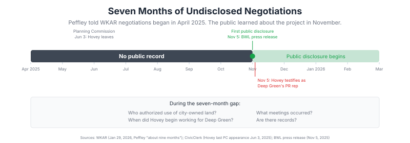
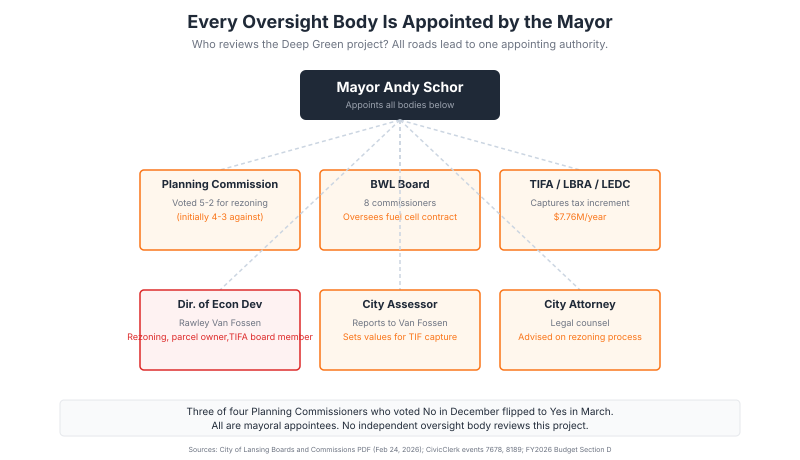

Lansing: Is the Council Being Set Up to Vote on Deep Green Blind? The Public Record Says Yes.
"No studies have been provided regarding impact or residential user rates."
"Do you have any environmental impact studies that you've done on this site?"
"Not on the site at the moment. No."
Council Member Nevarez Martinez and Deep Green CEO Mark Lee, Lansing City Council meeting, February 9, 2026 (~0:35:12)
LANSING, Mich. -- The Lansing City Council votes soon on the Deep Green land sale (Act 7-2025) and the conditional rezoning (Z-3-2026). Approving both would sell city-owned downtown parking lots and rezone them from DT-3 Urban Core to IND-1 Industrial for a data center with an on-site fuel cell power plant.
Public records raise questions that, based on available hearing transcripts and meeting packets, have not been answered in any public forum. This post compiles those questions. They are not accusations. The council may have answers that have not been shared publicly. If so, the public deserves to hear them before the vote.
![Two-column checklist comparing what has been disclosed about the Deep Green project (project cost, capacity, site, land sale price, fuel cell supplier and operator, BWL contract duration, electricity rate, cooling system, jobs, Pennies for Power) versus what has not been disclosed (power purchase agreement, Bloom service contract, fuel cell transfer terms, hazardous waste provisions, replacement triggers, actual fuel cell price, BWL operating costs, environmental study, noise study, fiscal analysis, NDA details, TIFA impact on general fund).](../img/council-disclosed-checklist.svg)
What Is in the Contracts?
BWL GM Dick Peffley cited a nondisclosure agreement at the November 6, 2025 BWL board meeting (Board packet, p. 39) when Commissioner Dale Schrader asked about the fuel cell company. Peffley did not disclose who he signed the NDA with or whether the BWL Board authorized it. The following terms have not been made available to the council or the public:
- The power purchase agreement between BWL and Deep Green (20-year term, pricing, capacity commitments)
- The Bloom Energy service contract (who operates the fuel cells, under what performance guarantees, at what cost)
- The fuel cell transfer terms (what BWL takes ownership of, warranty provisions, decommissioning obligations)
- Hazardous waste handling provisions (Bloom is an EPA-designated Large Quantity Generator of hazardous waste at its own facilities, and the same fuel cell desulfurization process that generates benzene waste at Bloom's facilities would operate at the Lansing site)
Has any council member reviewed any of these documents? Has the BWL Board?
Where Does the Money Go?
The Lansing State Journal (March 5, 2026) reported that LEAP projects $933,081 in average annual property tax revenue across 20 millages. The city's share would be $274,344. The site is in the TIFA district. Under MCL 125.4301(aa), approximately $453K in local taxes on the increment would be captured by the TIFA for Lansing Center debt, Jackson Field debt, and LEDC operations. Approximately $399K would flow through to schools, the state, and the ISD. The city general fund would receive approximately $0 from property taxes. (Full analysis: Deep Green's Projected $933K in Tax Revenue Does Not Reach the General Fund.)
The mayor did not know this on February 9 when he told the council the taxes "will go right into our general fund." He was corrected on camera (~1:00:59) by his own staff two minutes later.
The IND-1 rezoning would classify the facility as industrial. Michigan's PA 92 of 2014 largely eliminated the personal property tax for industrial equipment. Servers and other equipment inside the data center would be assessed separately and may be exempt from taxation under state law. The conditional rezoning blocks local exemptions but does not override state statutory exemptions.
BWL pays the city 6% of gross operating revenues ($29.5M in FY2026). The claimed $1M increase from Deep Green assumes 24 MW at $0.08/kWh, producing $16.8M in gross revenue, of which 6% would be $1.01M. That calculation holds on gross revenue, but BWL would also incur fuel cell operating costs that have not been disclosed.
Has the administration provided the council with a breakdown of how much revenue would reach the general fund after TIFA capture? Has BWL provided a projection of its fuel cell operating costs?
Who Validated the Numbers?
LEAP (Lansing Economic Area Partnership) produced the $933K property tax estimate for Deep Green, not as an independent analysis. LEAP used 55% of fair market value as its basis. Michigan law sets State Equalized Value at 50% (MCL 211.27a). LEAP has not published its methodology.
Deep Green CEO Mark Lee's February 5, 2026 letter to the council states that financial projections were validated by Ever-Green Energy. Ever-Green Energy is also BWL's consultant on the $100M steam-to-hot-water conversion. Ever-Green's business model depends on selling district energy consulting services to municipalities. BWL is a paying client. Deep Green's waste heat would fill a gap in the conversion that Ever-Green designed. The same firm that has a financial interest in the conversion proceeding as planned validated the developer's projections for the project that makes it work.
The $1.4M land sale price is based on a 2023 appraisal. A council member raised this at the February 9 meeting (~0:46:33), noting that municipal guidance recommends reappraisal within six months for a changing market. The mayor said he would talk to staff. No updated appraisal has been disclosed.
Has the council been told that LEAP produced the tax estimate for the developer? Has any independent third party reviewed the financial projections? Has a new appraisal been ordered?
Who Made the Decisions?
BWL GM Peffley told WKAR on January 29, 2026 that BWL had been working with Deep Green for "about nine months," placing the start at approximately April 2025. The project was not disclosed publicly until November 5, 2025. During that seven-month gap, BWL management negotiated contract terms under NDA and no public comment period was offered on the utility infrastructure commitment. Josh Hovey left the Planning Commission (June 3, 2025) and appeared five months later as Deep Green's paid PR representative at the first public hearing. The site moved from a private location to city-owned parking lots through an authorization process that has not been disclosed.

Rawley Van Fossen, the city's Director of Economic Development and Planning, has at least four roles touching this project. His department owns one of the four parcels being sold. His department processes the rezoning application. He sits on the TIFA/LBRA/LEDC board that would capture the property tax increment. And he was CC'd on the Chamber's formal Deep Green support letter alongside Mayor Schor on November 5, 2025. The City Assessor, who sets the property values that determine the tax increment, reports to Van Fossen.
Every appointed body touching this project is appointed by Mayor Schor: all 8 BWL commissioners, all Planning Commission members, the TIFA/LBRA/LEDC board, the Director of Economic Development, and the City Attorney. Three of four PC members who voted No in December flipped to Yes in March. All are mayoral appointees.

Is there any independent oversight body reviewing this project that is not appointed by the mayor who championed it?
What Studies Have Been Done?
At the February 9 council meeting (~0:21:45), Council Member Nevarez Martinez asked Deep Green CEO Mark Lee directly about documentation and studies:
| What She Asked | Deep Green's Answer |
|---|---|
| Articles of incorporation? | "If that has been requested as part of the process" |
| Bylaws? | "If that was requested" |
| Board of directors and backgrounds? | "Absolutely" (promised to provide) |
| Financial statements showing solvency? | "I don't believe we have" |
| Financing statements? | "No we do not" |
| Energy consumption study? | Provided to BWL, not to council |
| Environmental impact study on this site? | "Not on the site at the moment. No." |
| Impact study on residential utility rates? | "We'd have to defer to BWL" |
Nevarez Martinez also pointed out that Deep Green provided an energy consumption study to the city of Bradford in the UK for its rezoning there but has not provided one to Lansing.
For a $120 million industrial rezoning of downtown land involving a 20-year utility contract, on-site power generation, and an operator with a documented hazardous waste record, standard municipal practice would typically include an environmental impact assessment, a traffic study, an independent noise study, a fiscal impact analysis produced by someone other than the developer, a utility capacity analysis, an air quality assessment, and a community benefit agreement with enforceable terms.
Which of these studies have been completed? Which have been provided to the council? Have any been produced by a party independent of Deep Green, BWL, or LEAP?
The Regulatory Gap
Under Michigan law, the zoning process and the hazardous waste regulatory process operate in separate silos. There is no statutory requirement that a rezoning applicant disclose to the city council that its operations will generate hazardous waste. A facility can receive zoning approval, then separately register with EGLE as a Large Quantity Generator, file a contingency plan with the fire department, and begin producing benzene, chromium, lead, and ignitable waste without the council ever receiving formal notification. (EPA Generator Requirements; MCL 125.3201.)
The entities that must be notified about hazardous waste are EGLE (40 CFR 262.18, Site ID required before generating waste), the local fire department (40 CFR 262.262, contingency plan copies), and the Local Emergency Planning Committee (under the Emergency Planning and Community Right-to-Know Act, or EPCRA, Sections 311/312, annual Tier II chemical inventory reporting). The city council is not on any of these notification lists.
A new factory producing the same waste codes as Bloom's fuel cells would face 12 to 24 months of multi-agency approvals before operating: an EGLE air quality permit for hazardous air pollutants (benzene and hexavalent chromium are listed under Section 112 of the Clean Air Act), a hazardous waste site identification, a contingency plan filed with police and fire departments, EPCRA community notifications, OSHA substance-specific compliance programs for benzene, hexavalent chromium, and lead, and potentially a Risk Management Plan if hydrogen or flammable gases are stored above threshold quantities. Based on publicly available records, no EGLE air permit application has been disclosed for the Deep Green fuel cell plant, no hazardous waste contingency plan has been discussed in any council hearing, and no EPCRA notifications have been made.
The council has the authority under MCL 125.3502 to require detailed descriptions of operations as part of a special land use application and to condition approval on disclosure of hazardous materials. But this authority is discretionary. If the applicant does not volunteer the information and the council does not ask, the rezoning can proceed without any disclosure of hazardous waste generation.
Has the council been informed that Bloom Energy fuel cells generate hazardous waste during normal operations through the desulfurization of natural gas, and that Bloom is an EPA-designated Large Quantity Generator of hazardous waste at its own facilities? Has the volume of waste the Lansing site would produce been disclosed? Has the Lansing Fire Department been consulted? Has EGLE been notified?
Does the Rezoning Language Cover the Fuel Cell Plant?
The conditional rezoning (Z-3-2026) restricts the parcels to "data center operations and supporting facilities." The Lansing zoning code Master Use Table (Section 1245.03, as amended by Ord. No. 1331, effective May 5, 2025) lists "Power plants, solar array" as a separate Principal Permitted use (P) in IND-1. The code does not define "data center" or "supporting facilities."
A 16 MW fuel cell plant providing two-thirds of the facility's power during normal operations is listed in the code as a "power plant," a use category distinct from the "data center operations" that the conditional rezoning authorizes. The conditional rezoning language was drafted before the fuel cells were publicly disclosed. If the fuel cell plant is a separate principal use rather than a supporting facility, the conditional rezoning conditions as written may not explicitly authorize it. Under Section 1276.03(f)(2), "No permit or approval shall be granted under this ordinance for any use or development that is contrary to a statement of conditions."
The ownership structure adds another layer. The conditional rezoning conditions bind the land owner and "all future owners thereof." But the fuel cells would be owned by BWL and operated by Bloom, not by Deep Green. If the land owner, the equipment owner, and the operator are three different entities, who is bound by the zoning conditions, and who does the city enforce against if a condition is violated?
Should the conditional rezoning explicitly list "power plant" as an authorized use alongside "data center operations and supporting facilities"? Should the Zoning Administrator make a formal determination that a 16 MW fuel cell plant qualifies as a "supporting facility" rather than a separate principal use? And should the council understand the ownership and enforcement structure before approving conditions that may not reach the entities actually operating the equipment? These questions can be addressed before the vote.
How Does This Fit With $660 Million in Surrounding Investment?
The Deep Green site sits in the middle of one of the largest concentrations of public and private investment in Lansing's history. Within a few blocks of the proposed data center and fuel cell power plant:
| Project | Investment | Status |
|---|---|---|
| New Vision Lansing / Tower on Grand (Gentilozzi) | $316 million | Broke ground April 2025 |
| Public Safety and Courts Complex | $175 million | Completion late 2026 |
| Riverview 220 + Grand Vista Place (118 apartments, 1,800+ applications) | $41.2 million | Opening 2026 |
| New City Hall | $40 million | Under construction, Fall 2026 |
| Stadium North Lofts (132 apartments, Cedar/Larch corridor) | $38 million | Completed September 2024 |
| Ovation Center for Music and Arts (2,000+ seat venue) | $28 million | Opening Q1 2027 |
| Michigan Avenue Rehabilitation | $14 million | Complete |
| Brick Row (Gillespie, directly adjacent) | $8 million | Completion September 2026 |
| Total | ~$660 million |
The development pattern in this corridor is residential, mixed-use, entertainment, and civic. The Deep Green proposal would place an IND-1 Industrial facility with a 16 MW fuel cell power plant, backup generators (per Deep Green CEO Mark Lee at the February 9 meeting, ~0:40:23), and an operator whose fuel cells generate hazardous waste during normal operations and who is designated by the EPA as a Large Quantity Generator at its own facilities, in the center of it. The 132 apartments at Stadium North Lofts are on the same Cedar/Larch corridor. The Ovation concert venue is three blocks away. The new City Hall is two blocks away. Riverview 220 and Grand Vista Place received 1,800 applications for 118 apartments, demonstrating extraordinary housing demand in this exact area.
Has the council considered the impact of industrial rezoning on the value and viability of $660 million in surrounding residential, civic, and entertainment investment? Was a compatibility assessment conducted? Were any of the neighboring developers consulted?
What Happens If It Goes Wrong?
Bloom's fuel cells in Delaware were decommissioned after approximately seven years against an expected lifespan of 15 to 21, and Hindenburg Research documented post-2017 cells lasting under three. (Full analysis: Public Utility, Private Contract: The Deep Green Fuel Cell Deal.) The proposed BWL contract is 20 years, and no Bloom installation has been publicly documented as lasting that long. At current pricing, 16 MW of fuel cells cost an estimated $48 to $72 million per replacement cycle. If replacement is needed every seven years over the 20-year contract, the total could reach $180 million or more, borne by BWL ratepayers as the equipment owner.
Bloom is an EPA-designated Large Quantity Generator of hazardous waste at its own manufacturing and service facilities. The waste codes documented at Bloom's Delaware facility include benzene (a known human carcinogen), chromium, lead, and ignitable waste. Bloom's fuel cells require desulfurization of natural gas during normal operations, a process that accumulates benzene in collection canisters over 18 to 24 months. This operational waste is generated at every fuel cell site, not just at Bloom's manufacturing facilities. The volume of hazardous waste the Lansing site would produce has not been publicly addressed. The proposed site is in downtown Lansing adjacent to residential buildings and one block from Impressions 5, a children's science museum. No public discussion of operational hazardous waste from the fuel cells has appeared in any council hearing record. (See also: The Company Behind Deep Green's Fuel Cells Has Been Fined, Sued, and Subsidized in Three States.)
The conditional rezoning runs with the land. If Deep Green leaves, the IND-1 Industrial classification remains on 2.7 acres of what was downtown core land, BWL would still own the fuel cells, and any environmental contamination from fuel cell operations would require remediation.
What is the contingency plan if any of this happens, who is responsible, and under what contract terms? Those terms have not been disclosed.
Has the Project Been Independently Studied for Noise, Emissions, and Water?
Deep Green has promised to meet the downtown 55 dB noise limit at the property line. No independent noise study has been conducted. At the February 9 meeting (~0:49:38), Council Member Kost noted that residents near similar machinery report "the constant humming, the constant noise does cause a real nuisance and it really affects their quality of life." Deep Green's representative said an acoustician would produce a report after the rezoning is approved, not before. The 132 apartments at Stadium North Lofts are on the same corridor. The 2,000-seat Ovation Center is three blocks away. The new City Hall is two blocks away.
The fuel cells would produce approximately 105 million pounds of CO2 per year, equivalent to what 11,109 vehicles would produce (per the Lansing State Journal). No EGLE air quality permit application has been disclosed for the fuel cell plant. Lansing's climate action plan calls for carbon neutrality by 2040.
The cooling system uses a water-glycol mixture provided and disposed of by Dow Chemical. The site is adjacent to the Grand River. No water impact assessment has been publicly discussed.
Did the Project Change After the Petition Was Filed?
The original rezoning petition (Z-2-2025, filed October 17, 2025) described the project as a data center. Since then, the following components have been added or disclosed, all after the initial public hearings:
- A 16 MW on-site fuel cell power plant (not mentioned in the November 5, 2025 BWL press release)
- Bloom Energy as the fuel cell supplier and operator (identity withheld under NDA until January/March 2026)
- Dow Chemical as the water-glycol cooling system provider and disposer
- Backup generators with on-site fuel storage (4 to 10 units, fuel type still undetermined per the February 9 meeting ~0:40:23)
- Hedmark Holdings LLC, a Minnesota-based family real estate office, as Deep Green's U.S. development partner (Rob Stolpestad presented at the March 3, 2026 Planning Commission hearing; he was not in any prior hearing record)
The resubmitted petition (Z-3-2026) uses the same "data center operations and supporting facilities" language as the original. The Planning Commission voted on the rezoning twice: 4-3 against in December 2025 (before the fuel cell operator was publicly identified) and 5-2 in favor in March 2026. Are the conditions adequate for a project that is substantially different from what was originally proposed?
Are Deep Green's Promises Enforceable?
Deep Green has made public pledges on union labor, local hiring, noise limits, Pennies for Power donations, and community engagement. At the February 9 meeting (~0:52:44), Council Member Kost asked Deep Green whether it would enter into a community benefits agreement to make these promises binding. Deep Green's response was that its legal counsel had advised that such agreements were "more directed towards when benefits were sought or concessions were sought from the city."
That is not what a community benefits agreement is. A CBA is a legally binding contract between a developer and a community coalition that gives residents direct enforcement power over a developer's commitments. It exists precisely because promises made during public hearings are not otherwise enforceable by the community. Detroit has required CBAs by ordinance since 2016 for large development projects. Michigan's own MSU Center for Community and Economic Development has published guidance on CBA negotiation. The purpose of a CBA is not for the city to seek concessions from a developer. It is for the community to hold the developer to its promises.
Kost has also publicly questioned whether Deep Green's voluntary commitments are enforceable without an ordinance in place.
The conditional rezoning conditions (noise limits, DT-3 architectural standards, no industrial exemption) do run with the land. But the broader pledges on community benefits, environmental practices, and operational commitments are not part of those conditions. Without a community benefits agreement or enforceable contract provisions, they remain voluntary.
Why Is Lansing Proceeding When 25 Other Communities Paused?
Since late 2025, at least 25 Michigan communities have enacted data center moratoria ranging from 90 days to two years. They paused to study water consumption, energy demands, noise, grid impacts, environmental effects, and the absence of zoning categories that address data centers. Bipartisan state legislation (HB 5594-5596) would halt all new data center permits until April 2027. Washtenaw County adopted a resolution urging local governments to require 100% renewable energy, assess environmental impacts, and develop standardized planning toolkits before approving data centers. Mason, directly south of Lansing, enacted a moratorium on January 6, 2026 and did not lift it until it had adopted a new zoning district with data center-specific standards.
Lansing has not paused. No moratorium was considered. No data center-specific zoning standards have been adopted. The project is being approved under a conditional rezoning to an existing industrial district that does not mention data centers, fuel cells, or on-site power generation. The conditional rezoning conditions were written before the fuel cells were publicly disclosed.
These 25 communities concluded they did not have enough information to make responsible decisions about data centers. What information does Lansing have that they do not?
How Does This Compare to Standard Practice?
At least 25 Michigan communities have enacted data center moratoria since late 2025, citing the need for environmental, water, noise, and grid impact studies before approving projects. Bipartisan state legislation (HB 5594-5596) would halt all new data center permits until April 2027. The Michigan Public Service Commission held a public hearing on December 3, 2025 before approving DTE's contract for the Saline Township data center, and imposed conditions including cost-shift protections, emergency load-shedding requirements, and a mandate that "no other residential, commercial, or industrial customer may subsidize the costs."
BWL is a municipal utility exempt from MPSC oversight. No equivalent public hearing on the BWL-Deep Green contract has occurred. The comparison between what other Michigan authorities have required and what Lansing has required is documented in the following table.
| Requirement | Standard Practice | Deep Green / Lansing |
|---|---|---|
| Environmental impact assessment | Required by 25+ MI communities before proceeding | "Not on the site at the moment. No." (Mark Lee, Feb 9) |
| Air quality permit | Required for Saline data center's backup generators | No EGLE air permit application disclosed for 16 MW fuel cell plant |
| Hazardous waste plan | RCRA requires contingency plan, training, local emergency notification for facilities generating hazardous waste | No hazardous waste assessment or plan disclosed or discussed in any public hearing |
| Traffic study | Standard for industrial site plan review | None provided |
| Noise study | Cited by moratorium communities as essential | None provided |
| Utility contract public review | MPSC held public hearing for DTE/Saline; imposed 7+ conditions | BWL contract under NDA; no public hearing; BWL exempt from MPSC |
| Cost-shift protections | MPSC: "No other customer may subsidize" | No cost-shift analysis disclosed |
| Financial solvency documentation | Standard for large-scale development | "I don't believe we have" (Mark Lee, Feb 9) |
| Energy consumption study | Deep Green provided one to Bradford, UK | Provided to BWL but not to Council |
| Community moratorium to study impacts | 25+ MI communities enacted pauses of 90 days to 2 years | Lansing imposed no pause |
Sources: WKAR Data Center Tracker (Feb 27, 2026); Planet Detroit (Saline permits); MPSC (DTE contract conditions); Feb 9, 2026 Council meeting.
Michigan has no statewide environmental impact assessment statute for local land use decisions. Environmental review happens through individual EGLE permits rather than a comprehensive assessment. This makes it structurally possible for a project to receive zoning approval without any environmental review if no individual permit triggers are activated. For a downtown site adjacent to a river, residential buildings, and a children's museum, involving an operator designated by the EPA as a Large Quantity Generator of benzene, chromium, lead, and ignitable waste, the gap between what has been required elsewhere in Michigan and what has been required in Lansing is significant.
What Can the Council Do Before Voting?
- Request the contracts. A council member can file a FOIA request for the BWL-Deep Green power purchase agreement, the Bloom service contract, and the fuel cell transfer terms. If Peffley's NDA does not meet the requirements of MCL 15.243(1)(f), BWL may not have a legal basis to withhold them.
- Request a postponement. The council can postpone the votes until BWL responds to a FOIA request or voluntarily discloses the contract terms.
- Ask BWL for the legal basis of the NDA. Under MCL 15.243(1)(f)(ii), a promise of confidentiality must be authorized by the chief administrative officer. The council can ask whether the BWL Board voted to authorize the NDA, and what specific exemption BWL claims.
- Request an independent review. The financial projections were produced by LEAP (for Deep Green) and validated by Ever-Green Energy (a BWL consultant with a financial interest in the project's success). The council can request a review by a party that does not have a business relationship with either the developer or the utility.
- Request a new appraisal. The land sale price is based on a 2023 valuation in a corridor with significant recent development activity.
- Ask about Deep Green's operational track record. Deep Green Technologies USA, LLC was incorporated in Delaware in July 2025. The parent company operates one 1 MW facility in the UK. This project is 24 times that scale and would be the company's first US deployment. What due diligence has the administration conducted on the company's capacity to deliver?
- Request a cost-shift analysis from BWL. The MPSC required DTE to demonstrate that "no other residential, commercial, or industrial customer may subsidize the costs" of the Saline data center contract. BWL is exempt from MPSC oversight. Has BWL conducted an equivalent analysis showing that fuel cell operating costs, infrastructure investment, and potential equipment replacement will not be passed to existing ratepayers?
- Require a community benefits agreement. Deep Green declined Council Member Kost's request for a CBA on February 9, offering a characterization of CBAs that does not match standard practice. Detroit requires CBAs for projects over $75M on city land. This is a $120M project on city-owned land. The council can require a CBA before approving the land sale.
- Require the missing studies. Council Member Nevarez Martinez asked for an environmental impact study, financial solvency documentation, and an energy consumption study on February 9. Deep Green provided none of them to the council. The council can make providing these studies a condition of moving forward.
- Clarify the rezoning language. The conditional rezoning authorizes "data center operations and supporting facilities." The zoning code lists "Power plants, solar array" as a separate permitted use. The council can require the Zoning Administrator to determine whether a 16 MW fuel cell plant qualifies as a "supporting facility" or should be listed separately in the conditions.
- Consult the Lansing Fire Department and EGLE. Bloom Energy fuel cells generate hazardous waste during normal operations, and Bloom is an EPA-designated Large Quantity Generator at its own facilities. The volume of operational waste the Lansing site would produce has not been disclosed. The council can ask whether the fire department has been consulted about hazardous materials handling at a downtown site and whether EGLE has been notified.
- Consider a pause. Twenty-five Michigan communities have enacted data center moratoria to study impacts before voting. Lansing has not. The council can postpone the vote to conduct the studies, reviews, and disclosures described above. The question is whether the council has enough information to vote responsibly, or whether it needs more time to get it.
Written comments can be submitted to city.clerk@lansingmi.gov before 5 PM on the day of each hearing.
Methodology
This post compiles publicly available information from council meeting transcripts, BWL Board packets, news reporting, and state statutes. Council Member Nevarez Martinez's questions and Deep Green CEO Mark Lee's answers are from the February 9, 2026 City Council meeting (auto-generated YouTube captions, ~0:21:45 through ~0:37:16). Mayor Schor's statements about property tax revenue and his on-camera correction are from the same meeting (~0:58:56 and ~1:00:59). The seven-month negotiation timeline is based on BWL GM Peffley's statement to WKAR (Jan 29, 2026). The NDA exchange between Commissioner Schrader and Peffley is from the BWL Board packet (Nov 18, 2025, p. 39). TIFA capture analysis applies MCL 125.4301(aa). Ever-Green Energy's dual role is documented in Deep Green CEO Mark Lee's February 5, 2026 letter to the council (CivicClerk Event 7868). Van Fossen's CC on the Chamber letter is from CivicClerk Event 7678. Appointment data from the City of Lansing Boards and Commissions PDF (Feb 24, 2026). Bloom Energy's record from Hindenburg Research (Sep 2019) and A Better Delaware (Jan 2025). FOIA analysis applies MCL 15.243(1)(f). Zoning code analysis based on Lansing Code of Ordinances (Section 1245.03 Master Use Table, as amended by Ord. No. 1331, effective May 5, 2025). Surrounding investment data from Downtown Lansing Inc, City of Lansing, Ovation Center, WKAR, FOX 47, and Downtown Lansing Inc (Brick Row). Moratorium data from WKAR Data Center Tracker (Feb 27, 2026). MPSC data center contract conditions from MPSC press release (Dec 18, 2025). Hearing dates from WKAR (Mar 10, 2026).